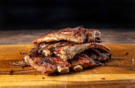

Instant Pot BBQ Ribs with Roquez
Description

You'll love this nice and simple Instant Pot Recipe on BBQ Ribs! Save time with this wonderful recipe using a Instant Pot!
Ingredients
- 3 - 5 lbs of Baby Back or Spare Ribs
- Your Favorite BBQ Sauce (Sweet Baby Rays)
- Your Favorite Dry Rub seasoning
- Apple Juice or Orange Juice
Steps / Directions
- Rip off membrane from ribs
- Cut ribs in half
- Dry Rub generously with seasoning
- Pour 2 cups of juice per pound of meat into Instant Pot
- Insert Ribs into Instant pot, pressure cook on high for 25 - 35 minutes
- Remove Ribs, and sauce your ribs
- Broil or Grill Ribs for 3-5 minutes
- Cut and Enjoy!